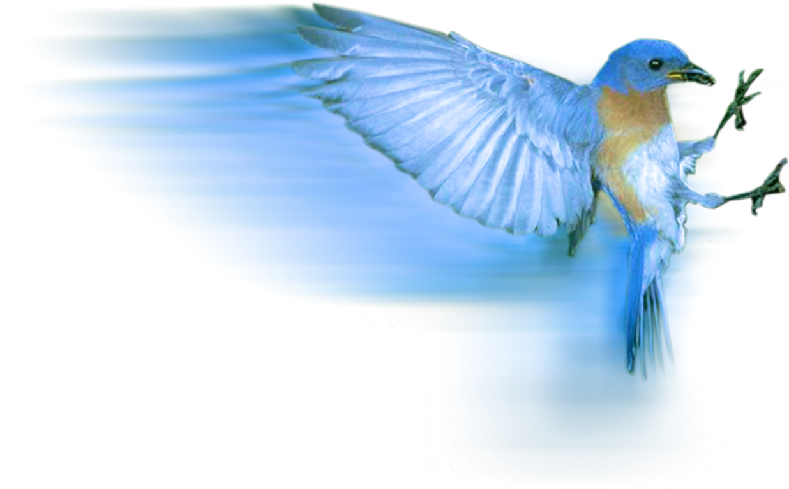

Крылатые и мы
Чему можем научиться у них?
Города, деревни, поля и леса, жаркие тропики или холодная
антарктика. Где бы мы ни были птицы окружают нас повсюду. Большие и маленькие, хищные и забавные, без
них невозможно представить нашу жизнь.
Цель этого сайта не в том чтобы просто узнать о пернатых
больше, но чтобы понять чему мы можем научиться из их жизни. Ведь именно умение и
способность учиться является залогом нашего роста.
Уроки для нас!
- ищи
- пархай
- будь легок
- не беспокойся
Подробнее в таблице
| Птица | Фото | Урок |
|---|---|---|
| Петух |  galliformes |
Встает рано. Бодрствует |
| Голубь |  columbiformes |
Не агрессивный, уступчивый |
| Цели | Думать ежедневно | |
Всегда актуально о жизни:
JW.ORG
| Курс frontend разработки | Сайт про HTML структуры |